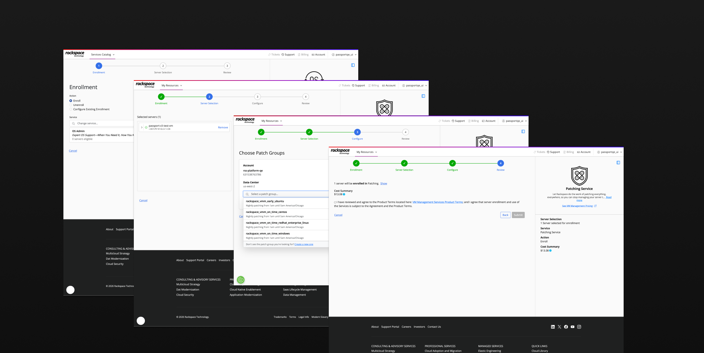

Rackspace Unified Marketplace
The Problem
Rackspace kept adding services, but the portal didn't reflect any of it. Customers logged in to manage what they already had and saw nothing else. If they wanted something new — a managed service, a professional engagement — they found out through a sales call or caught an email at some point.
There was no way to just look around. The only discovery path we had required us to interrupt them first.
My Role
I owned the information architecture and experience direction, and made the key structural calls early on. A small team of designers handled execution from there, with regular reviews against what we'd established at the start.
Decision 1: Building a Structure That Could Grow
We needed a structure that would still make sense when new products shipped six months or two years later. That shaped everything about how we approached the IA.
We went with product type — cloud platforms, infrastructure management, security, monitoring — rather than grouping by customer goal or cloud provider. Goal-based groupings always seem clean at first, but they start bending as the portfolio grows and the labels no longer fit what's underneath them. Provider-based groupings run into similar problems once you're multi-cloud.
Product type held up better and mapped to how technical buyers already navigate. A cloud architect knows what category they need. Organizing the catalog that way also meant new services had a clear home the moment they launched, without anyone having to rethink how the whole thing was laid out.

Decision 2: Getting from Browsing to Purchase
Before this, each product had its own enrollment flow, built at different times by different teams. Clicking through from the catalog put you somewhere that looked like a different product. That's enough to make someone stop and wonder if they're doing something wrong.
We kept enrollment inside the same container as the catalog — same header, same layout, the product summary sitting in the right rail the whole way through. When someone decides they want something, the experience just needs to support it and stay out of the way.

Outcome
After launch, customers were buying services they hadn't known were available. Some had been in the portfolio for a while with no real discovery path.
For new products, it meant something different. When something ships now, it shows up in the catalog. Customers find it when they go looking, on their own schedule, without us having to reach out first.
Key Impact
- Customers purchased services they hadn't previously known were available
- New products launched with an existing discovery channel for the first time
- The category structure held as the portfolio expanded — no restructuring needed